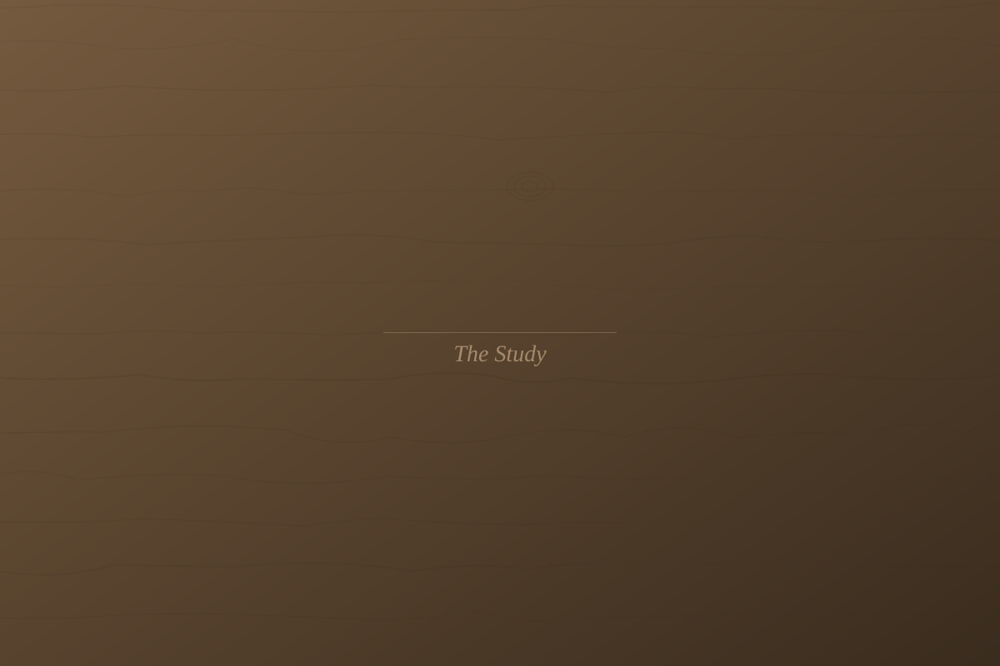
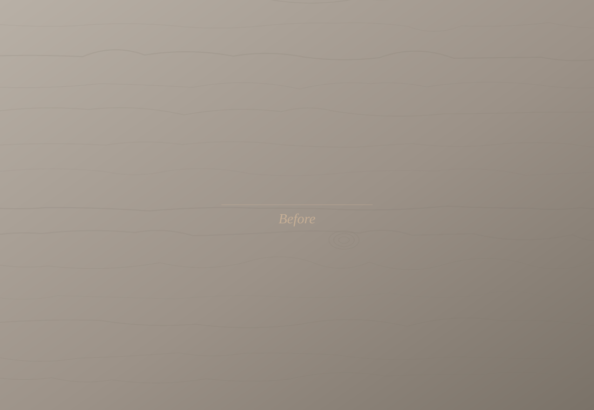
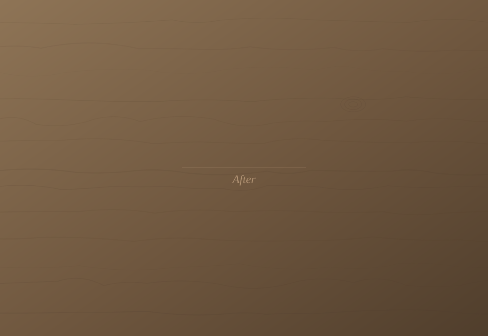
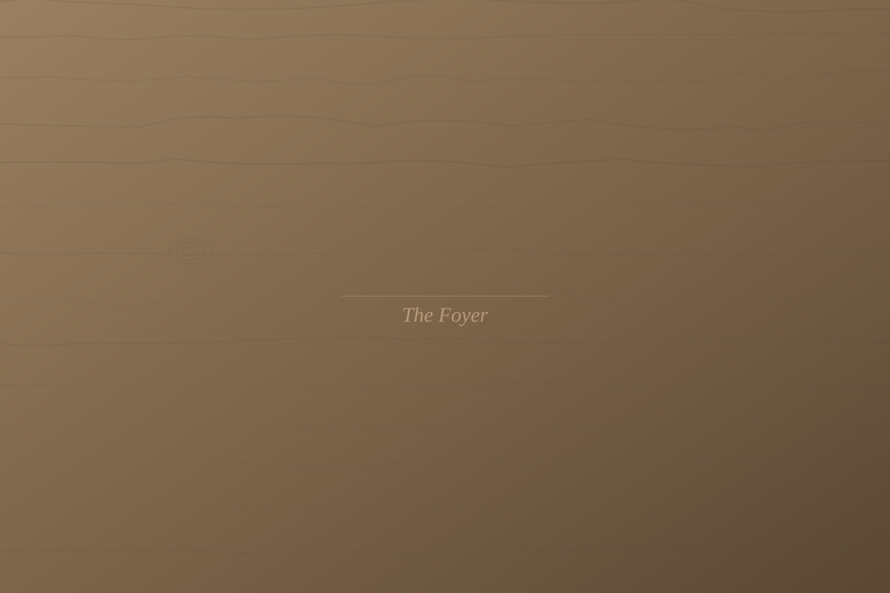
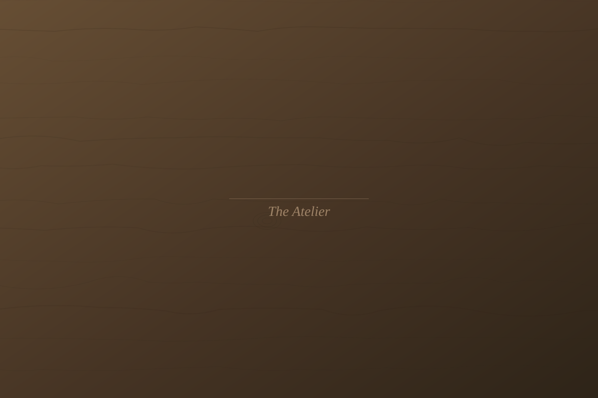
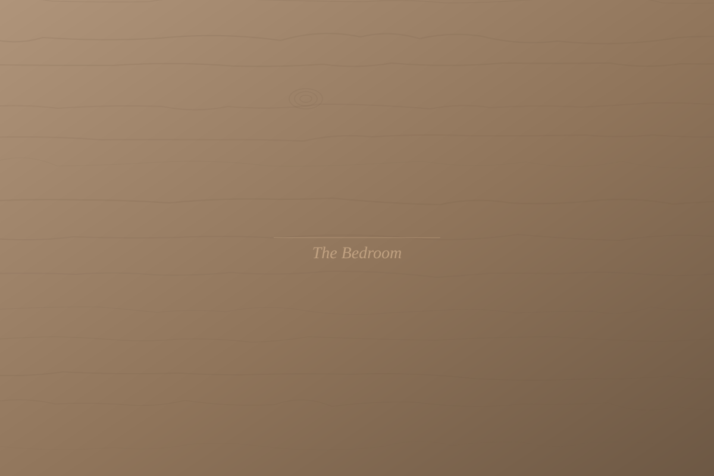

01
The Concept
We design the space with structural integrity and poetic intent. Detailed renders and material palettes are shared for resonance.



We design the space with structural integrity and poetic intent. Detailed renders and material palettes are shared for resonance.

Every commission begins with a conversation. You share the vision for your space, and we listen for the underlying rhythm of your life.

Each piece is made to order in our Lagos atelier. We use traditional joinery and hand-carved details that reveal the wood's inner character.

We bring the vision to life. Our team ensures every joint is seated and every surface is finished to our exact signature standards.

Most clients say the same thing when they walk in for the first time: this is exactly who I am.
A typical commission spans 12 to 16 weeks from initial brief to final installation.
Start your transformation